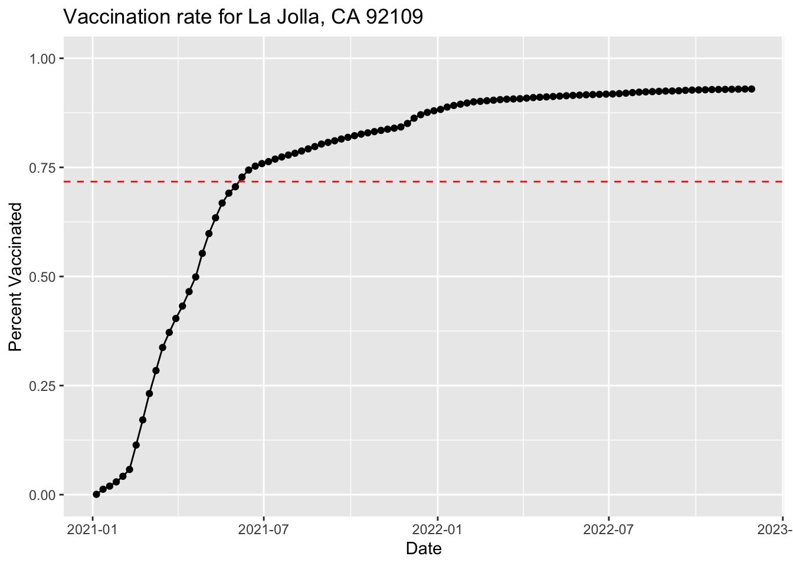

as_of_date zip_code_tabulation_area local_health_jurisdiction county
1 2021-01-05 91606 Los Angeles Los Angeles
2 2021-01-05 95312 Merced Merced
3 2021-01-05 91350 Los Angeles Los Angeles
4 2021-01-05 91708 San Bernardino San Bernardino
5 2021-01-05 95305 Tuolumne Tuolumne
6 2021-01-05 91351 Los Angeles Los Angeles
vaccine_equity_metric_quartile vem_source
1 1 Healthy Places Index Score
2 1 CDPH-Derived ZCTA Score
3 4 Healthy Places Index Score
4 NA No VEM Assigned
5 NA No VEM Assigned
6 3 Healthy Places Index Score
age12_plus_population age5_plus_population tot_population
1 38210.0 41964 44295
2 187.4 236 276
3 29940.2 33775 36173
4 3517.3 3794 NA
5 0.0 0 NA
6 27874.9 30641 32711
persons_fully_vaccinated persons_partially_vaccinated
1 14 482
2 NA NA
3 65 1225
4 NA NA
5 NA NA
6 31 644
percent_of_population_fully_vaccinated
1 0.000316
2 NA
3 0.001797
4 NA
5 NA
6 0.000948
percent_of_population_partially_vaccinated
1 0.010882
2 NA
3 0.033865
4 NA
5 NA
6 0.019688
percent_of_population_with_1_plus_dose booster_recip_count
1 0.011198 NA
2 NA NA
3 0.035662 NA
4 NA NA
5 NA NA
6 0.020636 NA
bivalent_dose_recip_count eligible_recipient_count
1 NA 14
2 NA 0
3 NA 65
4 NA 6
5 NA 0
6 NA 31
redacted
1 Information redacted in accordance with CA state privacy requirements
2 Information redacted in accordance with CA state privacy requirements
3 Information redacted in accordance with CA state privacy requirements
4 Information redacted in accordance with CA state privacy requirements
5 Information redacted in accordance with CA state privacy requirements
6 Information redacted in accordance with CA state privacy requirements
Q1. What column details the total number of people fully vaccinated?
persons_fully_vaccinated
Q2. What column details the Zip code tabulation area?
zip_code_tabulation_area
Q3. What is the earliest date in this dataset?
min(vax$as_of_date)
[1] "2021-01-05"
Q4. What is the latest date in this dataset?
max(vax$as_of_date)
[1] "2022-11-29"
skimr::skim(vax)
Data summary
Name
vax
Number of rows
176400
Number of columns
18
_______________________
Column type frequency:
character
5
numeric
13
________________________
Group variables
None
Variable type: character
skim_variable
n_missing
complete_rate
min
max
empty
n_unique
whitespace
as_of_date
0
1
10
10
0
100
0
local_health_jurisdiction
0
1
0
15
500
62
0
county
0
1
0
15
500
59
0
vem_source
0
1
15
26
0
3
0
redacted
0
1
2
69
0
2
0
Variable type: numeric
skim_variable
n_missing
complete_rate
mean
sd
p0
p25
p50
p75
p100
hist
zip_code_tabulation_area
0
1.00
93665.11
1817.39
90001
92257.75
93658.50
95380.50
97635.0
▃▅▅▇▁
vaccine_equity_metric_quartile
8700
0.95
2.44
1.11
1
1.00
2.00
3.00
4.0
▇▇▁▇▇
age12_plus_population
0
1.00
18895.04
18993.88
0
1346.95
13685.10
31756.12
88556.7
▇▃▂▁▁
age5_plus_population
0
1.00
20875.24
21105.98
0
1460.50
15364.00
34877.00
101902.0
▇▃▂▁▁
tot_population
8600
0.95
23372.77
22628.51
12
2126.00
18714.00
38168.00
111165.0
▇▅▂▁▁
persons_fully_vaccinated
15048
0.91
13504.90
14748.88
11
887.00
8076.00
22588.00
87207.0
▇▃▁▁▁
persons_partially_vaccinated
15048
0.91
1707.77
2001.11
11
167.00
1195.00
2547.00
39228.0
▇▁▁▁▁
percent_of_population_fully_vaccinated
18834
0.89
0.55
0.25
0
0.40
0.59
0.73
1.0
▃▃▆▇▃
percent_of_population_partially_vaccinated
18834
0.89
0.08
0.09
0
0.05
0.06
0.08
1.0
▇▁▁▁▁
percent_of_population_with_1_plus_dose
19739
0.89
0.62
0.25
0
0.46
0.65
0.79
1.0
▂▂▅▇▆
booster_recip_count
70611
0.60
5643.35
6858.00
11
281.00
2585.00
9377.00
58376.0
▇▂▁▁▁
bivalent_dose_recip_count
157094
0.11
1770.66
2315.50
11
117.00
778.00
2643.75
18815.0
▇▁▁▁▁
eligible_recipient_count
0
1.00
12345.64
14582.42
0
468.00
5851.00
21198.25
86706.0
▇▂▁▁▁
Q5. How many numeric columns are in this dataset?
13
Q6. Note that there are “missing values” in the dataset. How many NA values there in the persons_fully_vaccinated column?
sum( is.na(vax$persons_fully_vaccinated) )
[1] 15048
Q7. What percent of persons_fully_vaccinated values are missing (to 2 significant figures)?
Q14. Using either ggplot or base R graphics make a summary figure that shows the distribution of Percent of Population Fully Vaccinated values as of “2022-11-15”?
Q15. Using ggplot make a graph of the vaccination rate time course for the 92037 ZIP code area:
ggplot(ucsd) +aes(x = as_of_date, y = percent_of_population_fully_vaccinated) +geom_point() +geom_line(group=1) +ylim(c(0,1)) +labs(title ="Vaccination rate for La Jolla, CA 92109", x ="Date", y="Percent Vaccinated")
Q16. Calculate the mean “Percent of Population Fully Vaccinated” for ZIP code areas with a population as large as 92037 (La Jolla) as_of_date “2022-11-15”. Add this as a straight horizontal line to your plot from above with the geom_hline() function?
ggplot(ucsd) +aes(x = as_of_date, y = percent_of_population_fully_vaccinated) +geom_point() +geom_line(group=1) +geom_hline(yintercept = vax_36_mean, linetype ="dashed", col ="red") +ylim(c(0,1)) +labs(title ="Vaccination rate for La Jolla, CA 92109", x ="Date", y="Percent Vaccinated")

Q17. What is the 6 number summary (Min, 1st Qu., Median, Mean, 3rd Qu., and Max) of the “Percent of Population Fully Vaccinated” values for ZIP code areas with a population as large as 92037 (La Jolla) as_of_date “2022-11-15”?
Both of these zipcodes’ means are lower than the calculated mean for the La Jolla zipcode.
Q20. Finally make a time course plot of vaccination progress for all areas in the full dataset with a age5_plus_population > 36144.
vax_36_all <-filter(vax, age5_plus_population >36144)mean_vax_36_all <-mean(vax_36_all$percent_of_population_fully_vaccinated, na.rm = T)ggplot(vax_36_all) +aes(x = as_of_date, y = percent_of_population_fully_vaccinated, group = zip_code_tabulation_area) +geom_line(alpha=0.2, color="blue") +labs(x ="Date", y ="Percent Vaccinated", title ="Vaccination rates across California", subtitle ="Only areas with a population above 36k are shown") +geom_hline(yintercept = mean_vax_36_all, linetype="dashed")